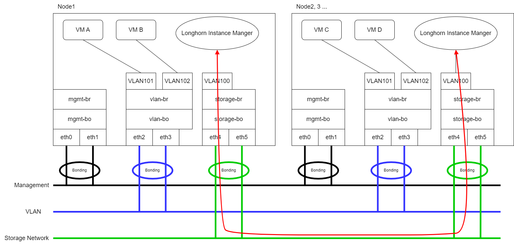

|
Dieses Dokument wurde mithilfe automatisierter maschineller Übersetzungstechnologie übersetzt. Wir bemühen uns um korrekte Übersetzungen, übernehmen jedoch keine Gewähr für die Vollständigkeit, Richtigkeit oder Zuverlässigkeit der übersetzten Inhalte. Im Falle von Abweichungen ist die englische Originalversion maßgebend und stellt den verbindlichen Text dar. |
Speichernetzwerk
SUSE Virtualization verwendet SUSE Storage, um Blockgerätevolumen für virtuelle Maschinen und Pods bereitzustellen. Wenn Sie den SUSE Storage Replikationsverkehr vom mgmt (dem integrierten Cluster-Netzwerk) oder anderen clusterweiten Arbeitslasten isolieren möchten, können Sie ein dediziertes Speichernetzwerk für bessere Netzwerkbandbreite und Leistung verwenden.
Für weitere Informationen siehe Speichernetzwerk in der SUSE Storage Dokumentation.
|
Vermeiden Sie es, SUSE Storage Einstellungen direkt zu konfigurieren, da dies zu unerwartetem oder unerwünschtem Systemverhalten führen kann. |
Voraussetzungen
Bevor Sie mit der Konfiguration des Speichernetzwerks beginnen, stellen Sie sicher, dass die folgenden Anforderungen erfüllt sind:
-
Die Netzwerkswitches sind korrekt konfiguriert, und eine dedizierte VLAN-ID ist dem Speichernetzwerk zugewiesen.
-
Das Cluster-Netzwerk und das VLAN-Netzwerk sind korrekt konfiguriert. Stellen Sie sicher, dass beide Netzwerke alle Knoten abdecken und zugänglich sind.
-
Der IP-Bereich des Speichernetzwerks hat die folgenden Eigenschaften:
-
Verwendet das IPv4 CIDR-Format
-
Kollidiert oder überlappt sich nicht mit Kubernetes-Cluster-Netzwerken
Die folgenden Adressen sind reserviert:
10.42.0.0/16,10.43.0.0/16,10.52.0.0/16und10.53.0.0/16. -
Erfüllt die Anforderungen des Clusters
Die erforderliche Anzahl von IP-Adressen wird mit der folgenden Formel berechnet:
Required number of IPs = (Number of nodes * 2) + (Number of disks * 2) + Number of images to be downloaded or uploadedBeispiel: Wenn ein Cluster fünf Knoten mit jeweils zwei Festplatten hat und zehn Images gleichzeitig hochgeladen werden sollen, sollte der IP-Bereich größer oder gleich
/26sein (Berechnung: (5 x 2) + (5 x 2) + 10 = 30). -
Schließt IP-Adressen aus, die SUSE Storage Pods und das Speichernetzwerk nicht verwenden dürfen, wie Adressen, die für RWX-Volumes, das Gateway und andere Komponenten reserviert sind.
-
-
Das Whereabouts CNI ist korrekt installiert.
Sie können überprüfen, ob die
ippools.whereabouts.cni.cncf.ioCRD im Cluster mit dem Befehlkubectl get crd ippools.whereabouts.cni.cncf.ioexistiert.Wenn eine leere Zeichenfolge zurückgegeben wird, fügen Sie die CRDs in diesem Verzeichnis mit den folgenden Befehlen hinzu:
kubectl apply -f https://raw.githubusercontent.com/harvester/harvester/v1.1.0/deploy/charts/harvester/dependency_charts/whereabouts/crds/whereabouts.cni.cncf.io_ippools.yaml kubectl apply -f https://raw.githubusercontent.com/harvester/harvester/v1.1.0/deploy/charts/harvester/dependency_charts/whereabouts/crds/whereabouts.cni.cncf.io_overlappingrangeipreservations.yamlDie Whereabouts CNI ist in bestimmten Upgrade-Szenarien nicht korrekt installiert.
-
Alle virtuellen Maschinen sind beendet.
Sie können den Status der virtuellen Maschinen mit dem Befehl
kubectl get -A vmiüberprüfen, der eine leere Zeichenfolge zurückgeben sollte.SUSE Virtualization sendet ein sanftes Herunterfahrsignal an virtuelle Maschinen, die über die SUSE Virtualization Benutzeroberfläche gestoppt sind. Allerdings werden Arbeitslasten unterbrochen und bleiben nicht verfügbar, bis Sie die virtuellen Maschinen manuell starten, nachdem Sie bestätigt haben, dass die Konfiguration des Speichernetzwerks erfolgreich angewendet wurde.
-
Alle Pods, die an SUSE Storage-Volumes angeschlossen sind, sind beendet.
-
Alle laufenden Bild-Uploads und -Downloads sind entweder abgeschlossen oder gelöscht.
SUSE Storage Replikationsverkehrs-Routing
Das Routing des SUSE Storage Replikationsverkehrs hängt davon ab, ob der VLAN-Verkehr der virtuellen Maschinen und das SUSE Storage Speichernetzwerk die gleichen physischen Schnittstellen verwenden oder unterschiedliche verwenden.
-
Gleiche physische Schnittstellen: Im folgenden Beispiel werden sowohl
eth2als aucheth3für den VLAN-Verkehr der virtuellen Maschinen und das SUSE Storage Speichernetzwerk verwendet. Die rote Linie zeigt an, dass SUSE Storage Replikationsverkehr übereth3sendet.
Sie müssen
eth2undeth3in der Cluster-Netzwerk- und VLAN-Netzwerkkonfiguration einbeziehen. -
Unterschiedliche physische Schnittstellen: Im folgenden Beispiel werden
eth2undeth3für den VLAN-Verkehr der virtuellen Maschinen verwendet, währendeth4undeth5für das SUSE Storage Speichernetzwerk verwendet werden. Die rote Linie zeigt an, dass SUSE Storage Replikationsverkehr übereth4sendet.
Sie müssen
eth4undeth5in der Cluster-Netzwerk- und VLAN-Netzwerkkonfiguration einbeziehen.
storage-network Einstellung
Die storage-network Einstellung ermöglicht es Ihnen, das Netzwerk zu konfigurieren, das verwendet wird, um den Speicherverkehr innerhalb des Clusters zu isolieren, wenn eine Trennung erforderlich ist.
Sie können das Speichernetzwerk entweder über die Benutzeroberfläche oder die Kommandozeilenschnittstelle aktivieren und deaktivieren. Wenn die Einstellung aktiviert ist, müssen Sie ein Multus NetworkAttachmentDefinition CRD erstellen, indem Sie bestimmte Felder konfigurieren.
Sobald die storage-network Einstellung angewendet wird, führt SUSE Virtualization die folgenden Aktionen aus:
-
Stoppt alle Pods, die mit SUSE Storage Volumes, Prometheus, Grafana, Alertmanager und dem VM Import Controller verbunden sind.
-
Erstellt ein neues
NetworkAttachmentDefinitionund aktualisiert die SUSE Storage Speichernetzwerkeinstellung. -
Startet alle
instance-managerundbacking-image-managerPods neu, um die neue Netzwerkkonfiguration anzuwenden.
Konfigurationsschritte
-
UI
-
CLI
|
Es wird dringend empfohlen, die SUSE Virtualization Benutzeroberfläche zur Konfiguration der |
==== Aktivieren Sie das Speichernetzwerk
-
Gehen Sie zu Erweiterte → Einstellungen → Speichernetzwerk.
-
Wählen Sie Aktiviert.
-
Konfigurieren Sie die Felder VLAN ID, Cluster-Netzwerk, IP-Bereich und Ausnehmen, um ein Multus
NetworkAttachmentDefinitionCRD zu erstellen. -
Klicken Sie auf Speichern.

==== Deaktivieren Sie das Speichernetzwerk
-
Gehen Sie zu Erweiterte → Einstellungen → Speichernetzwerk.
-
Wählen Sie Deaktivieren.
-
Klicken Sie auf Speichern.
Sobald das Speichernetzwerk deaktiviert ist, beginnt SUSE Storage das Pod-Netzwerk für speicherbezogene Operationen zu verwenden.

Sie können den folgenden Befehl verwenden, um die storage-network Einstellung zu konfigurieren.
kubectl edit settings.harvesterhci.io storage-networkDas Speichernetzwerk wird in den folgenden Situationen automatisch aktiviert:
-
Das
valueFeld enthält eine gültige JSON-Zeichenfolge.apiVersion: harvesterhci.io/v1beta1 kind: Setting metadata: name: storage-network value: '{"vlan":100,"clusterNetwork":"storage","range":"192.168.0.0/24", "exclude":["192.168.0.100/32"]}' -
Das
valueFeld ist leer.apiVersion: harvesterhci.io/v1beta1 kind: Setting metadata: name: storage-network value: ''
Das Speichernetzwerk ist deaktiviert, wenn Sie das value Feld entfernen.
apiVersion: harvesterhci.io/v1beta1
kind: Setting
metadata:
name: storage-network|
SUSE Virtualization betrachtet zusätzliche unwesentliche Zeichen in einem JSON-String als eine andere Konfiguration. |
Nachkonfigurationsschritte
|
SUSE Virtualization startet virtuelle Maschinen nicht automatisch. Sie müssen sicherstellen, dass die Konfiguration korrekt und erfolgreich angewendet wurde, und dann die virtuellen Maschinen bei Bedarf starten. |
-
Überprüfen Sie, ob der Status der
storage-networkEinstellungTrueist und der Typconfiguredist, indem Sie den folgenden Befehl verwenden:kubectl get settings.harvesterhci.io storage-network -o yamlBeispiel:
apiVersion: harvesterhci.io/v1beta1 kind: Setting metadata: annotations: storage-network.settings.harvesterhci.io/hash: da39a3ee5e6b4b0d3255bfef95601890afd80709 storage-network.settings.harvesterhci.io/net-attach-def: "" storage-network.settings.harvesterhci.io/old-net-attach-def: "" creationTimestamp: "2022-10-13T06:36:39Z" generation: 51 name: storage-network resourceVersion: "154638" uid: 2233ad63-ee52-45f6-a79c-147e48fc88db status: conditions: - lastUpdateTime: "2022-10-13T13:05:17Z" reason: Completed status: "True" type: configured -
Überprüfen Sie, ob die SUSE Storage Pods (
instance-managerundbacking-image-manager) bereit sind und ob ihre Netzwerke korrekt konfiguriert sind.Sie können jeden Pod mit dem folgenden Befehl inspizieren:
kubectl -n longhorn-system describe pod <pod-name>Fehler, die ähnlich wie die folgenden sind, deuten darauf hin, dass das Speichernetzwerk seine verfügbaren IP-Adressen erschöpft hat. Sie müssen das Speichernetzwerk mit einem ausreichenden IP-Bereich neu konfigurieren.
Events: Type Reason Age From Message ---- ------ ---- ---- ------- .... Warning FailedCreatePodSandBox 2m58s kubelet Failed to create pod sandbox: rpc error: code = Unknown desc = failed to setup network for sandbox "04e9bc160c4f1da612e2bb52dadc86702817ac557e641a3b07b7c4a340c9fc48": plugin type="multus" name="multus-cni-network" failed (add): [longhorn-system/backing-image-ds-default-image-lxq7r/7d6995ee-60a6-4f67-b9ea-246a73a4df54:storagenetwork-sdfg8]: error adding container to network "storagenetwork-sdfg8": error at storage engine: Could not allocate IP in range: ip: 172.16.0.1 / - 172.16.0.6 / range: net.IPNet{IP:net.IP{0xac, 0x10, 0x0, 0x0}, Mask:net.IPMask{0xff, 0xff, 0xff, 0xf8}} ....Wenn das Speichernetzwerk seine verfügbaren IP-Adressen erschöpft hat, können Sie ähnliche Fehler beim Hochladen oder Herunterladen von Bildern antreffen. Sie müssen die betroffenen Bilder löschen und das Speichernetzwerk mit einem ausreichenden IP-Bereich neu konfigurieren.
-
Überprüfen Sie, ob eine Schnittstelle mit dem Namen
lhnet1in denk8s.v1.cni.cncf.io/network-statusAnnotationen vorhanden ist. Die IP-Adresse dieser Schnittstelle muss innerhalb des vorgesehenen IP-Bereichs liegen.Sie können eine Liste von SUSE Storage
instance-managerPods mit dem folgenden Befehl abrufen:kubectl get pods -n longhorn-system -l longhorn.io/component=instance-manager -o yamlBeispiel:
apiVersion: v1 kind: Pod metadata: annotations: cni.projectcalico.org/containerID: 2518b0696f6635896645b5546417447843e14208525d3c19d7ec6d7296cc13cd cni.projectcalico.org/podIP: 10.52.2.122/32 cni.projectcalico.org/podIPs: 10.52.2.122/32 k8s.v1.cni.cncf.io/network-status: |- [{ "name": "k8s-pod-network", "ips": [ "10.52.2.122" ], "default": true, "dns": {} },{ "name": "harvester-system/storagenetwork-95bj4", "interface": "lhnet1", "ips": [ "192.168.0.3" ], "mac": "2e:51:e6:31:96:40", "dns": {} }] k8s.v1.cni.cncf.io/networks: '[{"namespace": "harvester-system", "name": "storagenetwork-95bj4", "interface": "lhnet1"}]' k8s.v1.cni.cncf.io/networks-status: |- [{ "name": "k8s-pod-network", "ips": [ "10.52.2.122" ], "default": true, "dns": {} },{ "name": "harvester-system/storagenetwork-95bj4", "interface": "lhnet1", "ips": [ "192.168.0.3" ], "mac": "2e:51:e6:31:96:40", "dns": {} }] kubernetes.io/psp: global-unrestricted-psp longhorn.io/last-applied-tolerations: '[{"key":"kubevirt.io/drain","operator":"Exists","effect":"NoSchedule"}]' Omitted... -
Testen Sie die Kommunikation zwischen den SUSE Storage Pods.
Das Speichernetzwerk ist für die interne Kommunikation zwischen SUSE Storage Pods vorgesehen, was zu hoher Leistung und Zuverlässigkeit führt. Das Speichernetzwerk ist jedoch weiterhin auf die externe Netzwerk-Infrastruktur für die Konnektivität angewiesen (ähnlich wie das VM VLAN-Netzwerk funktioniert). Wenn das externe Netzwerk nicht korrekt verbunden und konfiguriert ist, können die folgenden Probleme auftreten:
-
Die neu erstellte virtuelle Maschine bleibt im
Not-ReadyZustand hängen. -
Die
longhorn-managerPod-Protokolle enthalten Fehlermeldungen.Beispiel:
longhorn-manager-j6dhh/longhorn-manager.log:2024-03-20T16:25:24.662251001Z time="2024-03-20T16:25:24Z" level=error msg="Failed rebuilding of replica 10.0.16.26:10000" controller=longhorn-engine engine=pvc-0a151c59-ffa9-4938-9c86-59ebb296bc88-e-c2a7fe77 error="proxyServer=10.52.6.33:8501 destination=10.0.16.23:10000: failed to add replica tcp://10.0.16.26:10000 for volume: rpc error: code = Unknown desc = failed to get replica 10.0.16.26:10000: rpc error: code = Unavailable desc = all SubConns are in TransientFailure, latest connection error: connection error: desc = \"transport: Error while dialing dial tcp 10.0.16.26:10000: connect: no route to host\"" node=oml-harvester-9 volume=pvc-0a151c59-ffa9-4938-9c86-59ebb296bc88Um die Kommunikation zwischen SUSE Storage Pods zu testen, führen Sie die folgenden Schritte aus:
-
Ermitteln Sie die Speichernetzwerk-IP für jeden Instance Manager Pod (jeweils einer pro Knoten), der im vorherigen Schritt identifiziert wurde.
Beispiel:
instance-manager-43f1624d14076e1d95cd72371f0316e2 storage network IP: 10.0.16.8 instance-manager-ba38771e483008ce61249acf9948322f storage network IP: 10.0.16.14 -
Melden Sie sich bei diesen Pods an.
Wenn Sie den Befehl
ip addrausführen, enthält die Ausgabe IPs, die identisch mit den IPs in den Pod-Anmerkungen sind. Im folgenden Beispiel ist eine IP für das Pod-Netzwerk, während die andere für das Speichernetzwerk ist.Beispiel:
$ kubectl exec -i -t -n longhorn-system instance-manager-ba38771e483008ce61249acf9948322f -- /bin/sh $ ip addr 1: lo: <LOOPBACK,UP,LOWER_UP> mtu 65536 qdisc noqueue state UNKNOWN group default qlen 1000 link/loopback 00:00:00:00:00:00 brd 00:00:00:00:00:00 inet 127.0.0.1/8 scope host lo ... 3: eth0@if2277: <BROADCAST,MULTICAST,UP,LOWER_UP> mtu 1450 qdisc noqueue state UP group default // pod network link link/ether 0e:7c:d6:77:44:72 brd ff:ff:ff:ff:ff:ff link-netnsid 0 inet 10.52.6.146/32 scope global eth0 ... 4: lhnet1@if2278: <BROADCAST,MULTICAST,UP,LOWER_UP> mtu 1500 qdisc noqueue state UP group default // storage network link, note the MTU value link/ether fe:92:4f:fb:dd:20 brd ff:ff:ff:ff:ff:ff link-netnsid 0 inet 10.0.16.14/20 brd 10.0.31.255 scope global lhnet1 ... $ ip route default via 169.254.1.1 dev eth0 10.0.16.0/20 dev lhnet1 proto kernel scope link src 10.0.16.14 169.254.1.1 dev eth0 scope linkDer Link des Speichernetzwerks erbt immer den MTU-Wert des angehängten Cluster-Netzwerks, unabhängig vom konfigurierten MTU-Wert.
-
Starten Sie einen einfachen HTTP-Server in einem Pod.
Sie müssen diesen HTTP-Server ausdrücklich an die IP des Speichernetzwerks binden.
Beispiel:
$ python3 -m http.server 8000 --bind 10.0.16.14 (replace with your pod storage network IP) -
Testen Sie den HTTP-Server in einem anderen Pod.
Beispiel:
From instance-manager-43f1624d14076e1d95cd72371f0316e2 (IP 10.0.16.8) $ curl http://10.0.16.14:8000Wenn das Speichernetzwerk korrekt funktioniert, gibt der
curlBefehl eine Liste von Dateien auf dem HTTP-Server zurück. -
(Optional) Beheben Sie Probleme.
Das Speichernetzwerk kann aufgrund von Problemen mit dem externen Netzwerk, wie den folgenden, fehlerhaft sein:
-
Physische NICs (auf SUSE Virtualization Knoten installiert), die dem Speichernetzwerk zugeordnet sind, wurden in den externen Switches nicht demselben VLAN zugewiesen.
-
Die externen Switches sind nicht korrekt verbunden und konfiguriert.
-
-
-
Sobald die Konfiguration überprüft ist, können Sie bei Bedarf virtuelle Maschinen manuell starten.
Best Practices
-
Bei der Konfiguration eines IP-Bereichs für das Speichernetzwerk stellen Sie sicher, dass die zugewiesenen IP-Adressen den zukünftigen Bedürfnissen des Clusters gerecht werden. Dies ist wichtig, da SUSE Storage Pods (
instance-managerundbacking-image-manager) beendet werden, wenn neue Knoten zum Cluster hinzugefügt oder mehr Festplatten zu einem Knoten hinzugefügt werden, nachdem das Speichernetzwerk konfiguriert wurde, und wenn die erforderliche Anzahl von IPs die zugewiesenen IPs überschreitet. Die Lösung des Problems erfordert die Neukonfiguration des Speichernetzwerks mit dem richtigen IP-Bereich.SUSE Storage Pods verwenden das Speichernetzwerk wie folgt:
-
instance-managerPods: Die Komponenten des Instance Managers wurden in SUSE Storage v1.5.0 konsolidiert. Jeder Knoten benötigt eine IP-Adresse. Während eines Upgrades existieren sowohl alte als auch neue Versionen dieser Pods, und die alte Version wird gelöscht, sobald das Upgrade abgeschlossen ist. -
backing-image-dsPods: Diese Pods verarbeiten Uploads und Downloads von Bilddatenquellen in Echtzeit und werden entfernt, sobald die Bild-Uploads und -Downloads abgeschlossen sind. -
backing-image-managerPods: Jede Festplatte benötigt eine IP-Adresse. Während eines Upgrades existieren sowohl alte als auch neue Versionen dieser Pods, und die alte Version wird gelöscht, sobald das Upgrade abgeschlossen ist.
-
-
Konfigurieren Sie das Speichernetzwerk in einem nicht
mgmtCluster-Netzwerk, um eine vollständige Trennung des SUSE Storage Replikationsverkehrs vom Datenverkehr der Kubernetes-Steuerungsebene sicherzustellen. Die Verwendung vonmgmtist möglich, wird jedoch nicht empfohlen, da dies negative Auswirkungen (Ressourcen- und Bandbreitenkonkurrenz) auf die Leistung des Netzwerks der Steuerungsebene hat. Verwenden Siemgmtnur, wenn Ihr Cluster NIC-bezogene Einschränkungen hat und wenn Sie den Verkehr vollständig segregieren können.